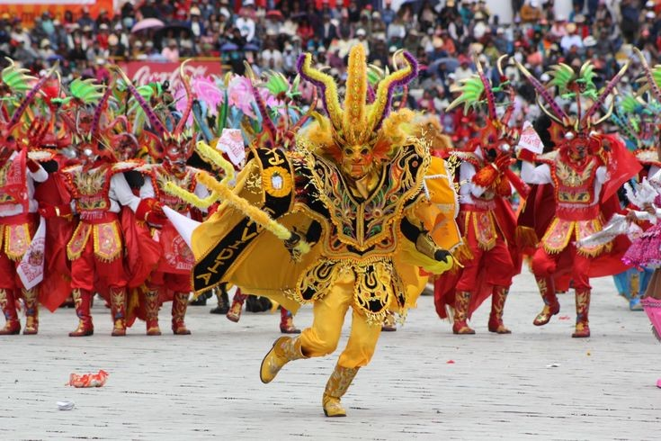

Historia de Puno
Puno es una región ubicada en el sur del Perú, en la meseta del Collao, a una altitud de más de 3,800 metros sobre el nivel del mar. Fue habitada originalmente por diversos grupos étnicos, como los aymaras y los quechuas, y luego fue colonizada por los españoles en el siglo XVI. Durante la época colonial, Puno fue un importante centro minero y agrícola, y también se convirtió en un punto de paso importante para las caravanas de comercio entre el Perú y Bolivia.
Gastronomía de Puno
La gastronomía de Puno se caracteriza por su variedad y riqueza de sabores, con influencias tanto de la cultura andina como de la española. Uno de los platos más populares de la región es el caldo de cabeza de carnero, un caldo espeso hecho con cabeza de carnero, papas y ajíes. Otros platos típicos incluyen el chairo, un guiso hecho con carnes y papas, y el chuño colado, una sopa espesa hecha con papas deshidratadas. También son populares los postres como la leche asada y el arroz con leche.
Cultura de Puno
La cultura de Puno es muy rica y diversa, y se puede ver reflejada en sus festividades, música y danzas. Una de las festividades más importantes de la región es la Fiesta de la Candelaria, que se celebra en febrero y reúne a miles de personas de todo el Perú y de otros países. Durante la fiesta, se realizan desfiles y danzas folklóricas, y se llevan a cabo competencias de bandas de música.